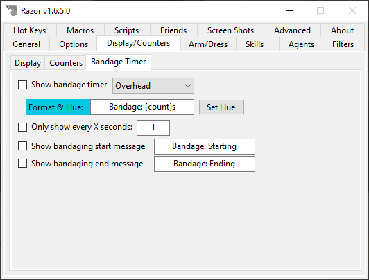

Display/Counters
Display/Counters

Display
Title Bar Display
Note
If you are using ClassicUO, images will not display in the title bar. It's recommended to use the built-in counter bar.

This feature will display the values of your counters and other information in the title bar of the Ultima Online client. Along with the Format of the counter wrapped in {}, Razor has the following values built in. Check Show in UO title bar to enable.
{ar}- Total Armor Rating{char}- This will display your character's name{crimtime}- When you become a criminal, this timer will count up until you are not longer one{buffsdebuffs}- The buffs/debuffs currently applied to your character{damage}- Display your min and max damage{dex}- Your current dex{followersmax}- The max number of followers allowed by your character{followers}- The current number of followers assigned to your character{gold}- Total amount of gold in your backpack{gate}- When you cast Gate, a timer will display for the 30 seconds the gate is up{hpmax}- Your max hit points{hp}- Your current hit points{int}- Your current intelligence level{largestatbar}- Display a large status bar{manamax}- Your max mana points{mana}- Your current mana level{maxweight}- The max number of stones you can carry{mediumstatbar}- Display a medium status bar{shard}- The name of the Shard you're playing on{skill}- When you use a skill from an assigned Razor hotkey, it will start a counter{stammax}- Your max stamina{stam}- Your current stamina{statbar}- Display a small status bar{stealthsteps}- The current number of steps taken since you stealthed{str}- Your current strength{uptime}- The length of time you've been connected{weight}- Your current weight in stones
Values that work on AOS+ servers.
{coldresist}{energyresist}{fireresist}{luck}{physresist}{poisonresist}{tithe}
Here is a default title bar to built yours off of:
{char} - {crimtime} {weight}/{maxweight} - ~#FF0000 {hp}/{hpmax} ~#~ - ~#FE2EF7 {stam}/{stammax}~#~ - ~#0080FF {mana}/{manamax} ~#~ {bp} {bm} {gl} {gs} {mr} {ns} {ss} {sa} Gold: {gold}
Color
You can color the title bar text using any HTML style 6 digit hex number. Use the code in the following manner:
HTML hex color code: ~#rrggbb ('~#~' to terminate)
For the purpose of example, I want to change the color of my hp display to orange. I would use the following code to do so: ~#FF6600 {hp}/{hpmax} ~#~. The '~#FF6600' tells Razor to color everything between it and the '~#~' to an orange color, the color orange selected by the six digits, FF6600. The '~#~' tells Razor to stop coloring. If you need to know the color codes for this function, try this page.
Track gold per sec/min/hour
When using Track Gold Per sec/min/hour these values will work:
{goldtotal}- The amount of gold collected since you checked the Track gold per sec/min/hour box{goldtotalmin}- The amount of time that has gone by since you started tracking your gold intake{gpm}- Display your gold per minute{gps}- Display your gold per second{gph}- Display your gold per hour
Other
- Highlight Spell Reagents on Cast
- Whenever you cast a spell, a red background will highlight the reagents used to cast the spell.
- Show noto hue on {char} in TitleBar
- When enabled, the name of your character on the Title bar will show in the same color as it will when you are clicked in the game.
- Enable gold per sec/min/hour trackers
- When checked, the counter will start monitoring your gold intake using the values above.
Counters

Counters are used to track the number of items you currently have in your backpack. The most commonly used counter is for reagents but this feature can be used on any item. Razor will come with some common counters available to you by default.
Adding a counter
- Click Add... under the list of counters.
- Click Target and target the item to add. The Item ID and color fields should auto-populate for you.
- The Name (of the item) is the name as you see it when you click the item.
- The Format is the letter code you want to use. For example, the default for black pearl is
bp. - Click OK once all fields are entered.
- If you want this counter to display in the titlebar, check Display image in title bar. For example when used with black pearl, the title bar displays a small black pearl beside the count rather than the abbrev
bp.
To Edit or Remove a counter, select it and click Del/Edit.
Click Recount to force Razor to check all the containers on your character and get the correct acounts.
Others
- Show Images with Counters
- Check this to show counter images instead of abbreviations. Each counter can be modified individually from the counter table with the edit tab to disable this.
- Warn when a counter is below X
- When your counter for any specific item drops below X, Razor will provide a warning in red.
Bandage Timer

- Show bandage timer
- When you have this enabled, when you use a bandage a timer will display.